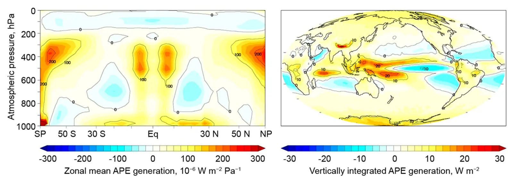

Spatial distribution of generation of Lorenz's available potential energy in a global climate model
Key finding. Available potential energy generation is concentrated in two regions of the mid- to upper troposphere — the tropics, especially the western tropical Pacific, driven largely by latent heat released in the intertropical convergence zone, and the polar regions, especially in the relatively cold polar night where longwave cooling is not offset by shortwave warming.

What question did this research address?
Winds are driven by available potential energy, the portion of the atmosphere's potential energy that can be converted into motion. Global totals for that quantity and its rate of generation had been estimated before.
What had not been asked is where it comes from. This paper set out to map the geographic and seasonal distribution of the contributions, so that the energy driving atmospheric circulation could be traced to the places generating it.
What did we find?
The maps were produced from simulations with the NCAR CESM1.0.4 climate model, giving both the spatial and the seasonal distribution of contributions to available potential energy and to its generation.
The organising principle is simple to state. Available potential energy is generated by processes that cool relatively cool areas or warm relatively warm areas, sharpening the temperature contrast the circulation then works to remove.
The tropical source, especially over the western tropical Pacific, comes largely from latent heat released as water vapour condenses in the intertropical convergence zone.
The polar source is the mirror image. During the polar night, longwave cooling proceeds without any shortwave warming to offset it, cooling an already cold region.
These qualitative conclusions proved largely insensitive to the assumptions examined in the analysis, so the geographic pattern is a robust feature rather than an artefact of the treatment.
Why does it matter?
Knowing where the energy driving the winds is generated is a prerequisite for reasoning about how much of it can be extracted, and how extraction in one place might affect the circulation elsewhere.
The two sources also respond very differently to a warming climate. Latent heat release in the tropics and radiative cooling in the polar night are governed by different physics, so a map that separates them is a starting point for asking how the circulation itself will change.
Citation
Eva Ahbe and Ken Caldeira (2017). Spatial distribution of generation of Lorenz's available potential energy in a global climate model. Journal of Climate 30, 2089-2101.
Related
- How much wind power can the atmosphere actually supply?
- Geophysical potential for wind energy over the open oceans (Possner and Caldeira, 2017)